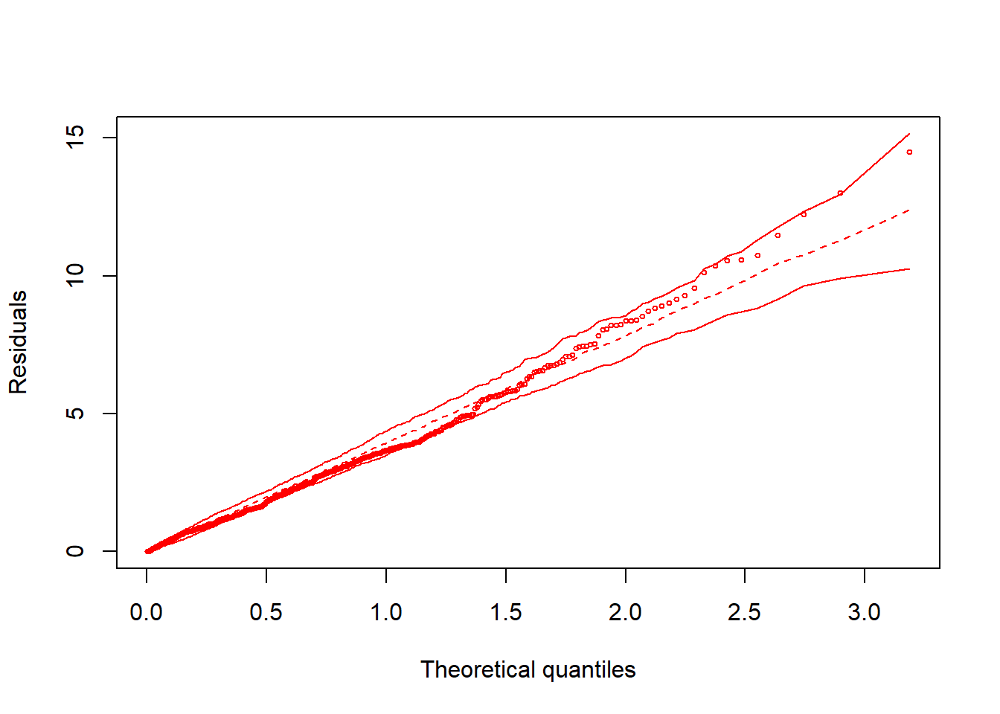
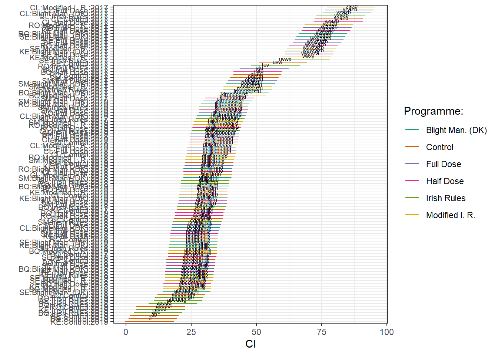

Yield analysis
Yield analysis
Load packages
list.of.packages <-
c(
"tidyverse",
"devtools",
"egg",
"hrbrthemes",
"sjPlot",
"effects",
"lsmeans",
"multcomp",
"multcompView",
"ggpubr"
)
new.packages <-
list.of.packages[!(list.of.packages %in% installed.packages()[, "Package"])]
#Download packages that are not already present in the library
if (length(new.packages))
install.packages(new.packages)
packages_load <-
lapply(list.of.packages, require, character.only = TRUE)
#Print warning if there is a problem with installing/loading some of packages
if (any(as.numeric(packages_load) == 0)) {
warning(paste("Package/s: ", paste(list.of.packages[packages_load != TRUE], sep = ", "), "not loaded!"))
} else {
print("All packages were successfully loaded.")
}## [1] "All packages were successfully loaded."rm(list.of.packages, new.packages, packages_load)
#if instal is not working try
#install.packages("ROCR", repos = c(CRAN="https://cran.r-project.org/"))Data import
yld <- read_csv(here::here("data", "yield", "yield.csv"))
yld <- yld %>%
mutate_each_(funs(factor(.)), c("year", "variety", "treatment"))ggpubr:: ggboxplot(yld, x = "variety", y = "marketable",facet.by = "year", color = "treatment",palette = "Dark2")
# Two-way interaction plot
interaction.plot(x.factor = yld$treatment, trace.factor = yld$variety,
response = yld$marketable, fun = mean,
type = "b", legend = TRUE,
xlab = "", ylab="Yield",
pch=c(1,19), col =palette(rainbow(6)))
yldmean <-
yld %>%
group_by(year, variety, treatment) %>%
summarise_at(.vars = c("marketable"), .funs = c(mean), na.rm = TRUE) %>%
reshape2::melt(
id.vars = c("year", "variety", "treatment"),
variable.name = "yld_class",
value.name = "mean"
)
yldsd <-
yld %>%
group_by(year, variety, treatment) %>%
summarise_at(.vars = c( "marketable"), .funs = c(sd), na.rm = TRUE) %>%
reshape2::melt(
id.vars = c("year", "variety", "treatment"),
variable.name = "yld_class",
value.name = "sd"
) tit <- "Total yield per variety, programme and year"
left_join(yldmean, yldsd, by = colnames(yldmean)[1:4]) %>%
mutate_each_(funs(factor(.)),c("year","variety", "treatment")) %>%
ggplot(., aes(
x = variety,
y = mean,
fill = variety,
group = variety
)) +
geom_bar(
color = "black",
stat = "identity",
position = position_dodge(.8),
width = 0.7
) +
geom_errorbar(aes(ymin = mean - sd,
ymax = mean + sd),
position = position_dodge(.8),
width = 0.25,
color = "gray") +
facet_grid(~year, scales = "free")+
scale_fill_brewer("Variety:", palette = "Dark2") +
theme_article() +
scale_y_continuous(limits = c(0, 100), breaks = seq(0, 100, 25)) +
labs(x = "",
y = "Yield (T/ha)",
title = tit) +
theme(
axis.title = element_text(size = 11),
panel.grid.major = element_blank(),
panel.grid.minor = element_blank(),
axis.text = element_text(size = 11),
legend.position = "top",
# axis.text.x = element_blank(),
axis.ticks.x = element_blank()
) +
ggsave(filename= here::here("results", "yield", paste0(tit, ".png")),
width = 10, height = 5,
dpi = 320)
Model fitting
library (lmerTest)
fit2016 <- lmer(marketable ~
block + treatment * variety + (1 | block:treatment),
data=subset(yld, year==2016)
)
hnp::hnp(fit2016)## Linear mixed-effects model (using lme4)plot(fit2016)
car::Anova(fit2016)fit <- lmer(marketable ~
block + (year * treatment * variety)^2 +
(1 | block:treatment:year),
data=subset(yld, year!=2016)
)
plot(fit)
hnp::hnp(fit)## Linear mixed-effects model (using lme4)
car::Anova(fit)posthoc<-
emmeans:: lsmeans(fit2016, pairwise ~ treatment * variety, adjust="tukey", type = "response")
d2016 <-
cld(posthoc[[1]],
alpha =.05,
Letters=letters)
d2016 <-
d2016 %>%
tbl_df() %>%
unite( "pairs", variety, treatment, sep = ":",remove= FALSE )
d2016$.group <- trimws(d2016$.group)
d2016$pairs <-
factor(d2016$pairs, levels = d2016$pairs[order(d2016$lsmean)])
ggplot(d2016, aes(x=pairs, y = lsmean, colour = treatment))+
geom_errorbar(aes(ymin=lower.CL, ymax=upper.CL), width=.2)+
geom_point(size = .1)+
scale_color_brewer("Programme:", palette = "Dark2") +
labs(x=" ", y="CI")+ coord_flip()+
geom_text(
aes(label = .group),
vjust = -0.5,
hjust = 0.3,
color = "black",
position = position_dodge(0.9),
size = 2
) +
theme_bw()+
ggsave(filename= here::here("results", "yield", "pairwise comparisons 2016.png"),
width = 7, height = 2.5, dpi = 620)
posthoc<- emmeans:: lsmeans(fit, ~treatment * variety *year, adjust="tukey", type = "response")
drest <- posthoc
(drest <-
cld(posthoc,
alpha = .05,
Letters=letters))drest <-
drest %>%
tbl_df() %>%
unite( "pairs", variety, treatment, year, year, sep = ":",remove= FALSE )
drest$pairs <-
factor(drest$pairs, levels = drest$pairs[order(drest$lsmean)])
drest$.group <- trimws(drest$.group)
ggplot(drest, aes(x=pairs, y = lsmean, colour = treatment))+
geom_errorbar(aes(ymin=lower.CL, ymax=upper.CL), width=.2)+
geom_point(size = .1)+
scale_color_brewer("Programme:", palette = "Dark2") +
labs(x=" ", y="CI")+ coord_flip()+
geom_text(
aes(label = .group),
vjust = -0.5,
hjust = 0.3,
color = "black",
position = position_dodge(0.9),
size = 2
) +
theme_bw()+
theme(axis.text.y = element_text(size = 8))+
ggsave(filename= here::here("results", "yield", "pairwise comparisons.png"),
width = 7, height = 11.5, dpi = 420)
d2016$year <- "2016"
d1 <-
dplyr::bind_rows(d2016, drest)
d1 <-
d1 %>%
mutate(variety = factor(variety, levels =c("KE","BQ", "RO", "SE", "CL","SM"))) %>%
mutate(year = factor(year, levels =c("2016","2017", "2018", "2019"))) %>%
mutate(treatment = factor(treatment, levels = c("Control", "Full Dose","Half Dose","Irish Rules","Blight Man. (DK)" ,"Modified I. R.")))#Set the position dodge
dodging <- .8
p_fin <-
d1 %>%
#Add vertical lines for clarity
mutate(
line_positions = as.numeric(factor(variety, levels = unique(variety))),
line_positions = line_positions + .5,
line_positions = ifelse(line_positions == max(line_positions), NA, line_positions),
line_positions = ifelse(year == 2016 &
variety == "CL", 5.5, line_positions),
line_positions = ifelse(year == 2016 &
variety == "SE", 3.5, line_positions)
) %>%
ggplot(data = ., aes(x = variety, y = lsmean)) +
geom_errorbar(
aes(
ymin = lower.CL,
ymax = upper.CL,
group = treatment,
color = treatment
),
position = position_dodge(width = dodging),
width = .2
) +
geom_point(
aes(y = lsmean, group = treatment, color = treatment),
size = 1,
shape = 2,
position = position_dodge(width = dodging)
) +
facet_wrap(~ year, nrow = 1) +
geom_point(
data = yld,
aes(y = marketable, color = treatment, group = treatment),
size = .2,
alpha = .5,
position = position_dodge(width = dodging)
) +
scale_fill_brewer("Programme:", palette = "Dark2") +
theme_article() +
theme(legend.position = "top") +
geom_vline(aes(xintercept = line_positions),
size = .1,
alpha = .3) +
labs(colour = "Programme:",
x = "Variety",
y = "Yield (t per ha)")
p_fin
ggsave(
p_fin,
filename = here::here("results", "yield", "Effects final.png"),
width = 7,
height = 3.7,
dpi = 820
)
rm(p_fin)session_info()## - Session info ----------------------------------------------------------
## setting value
## version R version 3.6.1 (2019-07-05)
## os Windows 10 x64
## system x86_64, mingw32
## ui RTerm
## language (EN)
## collate English_United States.1252
## ctype English_United States.1252
## tz Europe/London
## date 2019-10-20
##
## - Packages --------------------------------------------------------------
## ! package * version date lib
## abind 1.4-5 2016-07-21 [1]
## assertthat 0.2.1 2019-03-21 [1]
## backports 1.1.4 2019-04-10 [1]
## bayestestR 0.2.2 2019-06-20 [1]
## boot 1.3-22 2019-04-02 [1]
## broom 0.5.2 2019-04-07 [1]
## callr 3.2.0 2019-03-15 [1]
## car 3.0-3 2019-05-27 [1]
## carData * 3.0-2 2018-09-30 [1]
## cellranger 1.1.0 2016-07-27 [1]
## cli 1.1.0 2019-03-19 [1]
## coda 0.19-2 2018-10-08 [1]
## codetools 0.2-16 2018-12-24 [1]
## colorspace 1.4-1 2019-03-18 [1]
## crayon 1.3.4 2017-09-16 [1]
## curl 3.3 2019-01-10 [1]
## data.table 1.12.2 2019-04-07 [1]
## DBI 1.0.0 2018-05-02 [1]
## desc 1.2.0 2018-05-01 [1]
## devtools * 2.0.2 2019-04-08 [1]
## digest 0.6.19 2019-05-20 [1]
## dplyr * 0.8.1 2019-05-14 [1]
## effects * 4.1-1 2019-05-28 [1]
## egg * 0.4.2 2018-11-03 [1]
## emmeans * 1.3.5 2019-06-10 [1]
## estimability 1.3 2018-02-11 [1]
## evaluate 0.14 2019-05-28 [1]
## extrafont 0.17 2014-12-08 [1]
## extrafontdb 1.0 2012-06-11 [1]
## forcats * 0.4.0 2019-02-17 [1]
## foreign 0.8-71 2018-07-20 [1]
## fs 1.3.1 2019-05-06 [1]
## gdtools 0.1.9 2019-06-18 [1]
## generics 0.0.2 2018-11-29 [1]
## ggeffects 0.10.0 2019-05-13 [1]
## ggplot2 * 3.2.0 2019-06-16 [1]
## ggpubr * 0.2 2018-11-15 [1]
## glmmTMB 0.2.3 2019-09-13 [1]
## glue 1.3.1 2019-03-12 [1]
## gridExtra * 2.3 2017-09-09 [1]
## gtable 0.3.0 2019-03-25 [1]
## haven 2.1.0 2019-02-19 [1]
## here 0.1 2017-05-28 [1]
## hms 0.4.2 2018-03-10 [1]
## hnp 1.2-6 2018-05-21 [1]
## hrbrthemes * 0.6.0 2019-01-21 [1]
## htmltools 0.3.6 2017-04-28 [1]
## httr 1.4.0 2018-12-11 [1]
## insight 0.3.0 2019-05-11 [1]
## jsonlite 1.6 2018-12-07 [1]
## knitr 1.23 2019-05-18 [1]
## labeling 0.3 2014-08-23 [1]
## lattice 0.20-38 2018-11-04 [1]
## lazyeval 0.2.2 2019-03-15 [1]
## lme4 * 1.1-21 2019-03-05 [1]
## lmerTest * 3.1-0 2019-02-11 [1]
## lsmeans * 2.30-0 2018-11-02 [1]
## lubridate 1.7.4 2018-04-11 [1]
## magrittr * 1.5 2014-11-22 [1]
## MASS * 7.3-51.4 2019-03-31 [1]
## Matrix * 1.2-17 2019-03-22 [1]
## memoise 1.1.0 2017-04-21 [1]
## minqa 1.2.4 2014-10-09 [1]
## mitools 2.4 2019-04-26 [1]
## mnormt 1.5-5 2016-10-15 [1]
## modelr 0.1.4 2019-02-18 [1]
## multcomp * 1.4-10 2019-03-05 [1]
## multcompView * 0.1-7 2015-07-31 [1]
## munsell 0.5.0 2018-06-12 [1]
## mvtnorm * 1.0-11 2019-06-19 [1]
## nlme 3.1-140 2019-05-12 [1]
## nloptr 1.2.1 2018-10-03 [1]
## nnet 7.3-12 2016-02-02 [1]
## numDeriv 2016.8-1.1 2019-06-06 [1]
## openxlsx 4.1.0.1 2019-05-28 [1]
## pbkrtest 0.4-7 2017-03-15 [1]
## performance 0.2.0 2019-06-04 [1]
## pillar 1.4.1 2019-05-28 [1]
## pkgbuild 1.0.3 2019-03-20 [1]
## pkgconfig 2.0.2 2018-08-16 [1]
## pkgload 1.0.2 2018-10-29 [1]
## plyr 1.8.4 2016-06-08 [1]
## prettyunits 1.0.2 2015-07-13 [1]
## processx 3.3.1 2019-05-08 [1]
## ps 1.3.0 2018-12-21 [1]
## psych 1.8.12 2019-01-12 [1]
## purrr * 0.3.2 2019-03-15 [1]
## R6 2.4.0 2019-02-14 [1]
## RColorBrewer 1.1-2 2014-12-07 [1]
## Rcpp 1.0.2 2019-07-25 [1]
## readr * 1.3.1 2018-12-21 [1]
## readxl 1.3.1 2019-03-13 [1]
## remotes 2.0.4 2019-04-10 [1]
## reshape2 1.4.3 2017-12-11 [1]
## rio 0.5.16 2018-11-26 [1]
## rlang 0.4.0 2019-06-25 [1]
## rmarkdown 1.13 2019-05-22 [1]
## rprojroot 1.3-2 2018-01-03 [1]
## rstudioapi 0.10 2019-03-19 [1]
## Rttf2pt1 1.3.7 2018-06-29 [1]
## rvest 0.3.4 2019-05-15 [1]
## sandwich 2.5-1 2019-04-06 [1]
## scales 1.0.0 2018-08-09 [1]
## sessioninfo 1.1.1 2018-11-05 [1]
## sjlabelled 1.1.0 2019-06-06 [1]
## sjmisc 2.8.1 2019-06-17 [1]
## sjPlot * 2.6.3 2019-04-27 [1]
## sjstats 0.17.5 2019-06-04 [1]
## stringi 1.4.3 2019-03-12 [1]
## stringr * 1.4.0 2019-02-10 [1]
## survey 3.36 2019-04-27 [1]
## survival * 2.44-1.1 2019-04-01 [1]
## testthat 2.1.1 2019-04-23 [1]
## TH.data * 1.0-10 2019-01-21 [1]
## tibble * 2.1.3 2019-06-06 [1]
## tidyr * 0.8.3 2019-03-01 [1]
## tidyselect 0.2.5 2018-10-11 [1]
## tidyverse * 1.2.1 2017-11-14 [1]
## D TMB 1.7.15 2018-11-09 [1]
## usethis * 1.5.0 2019-04-07 [1]
## withr 2.1.2 2018-03-15 [1]
## xfun 0.7 2019-05-14 [1]
## xml2 1.2.0 2018-01-24 [1]
## xtable 1.8-4 2019-04-21 [1]
## yaml 2.2.0 2018-07-25 [1]
## zip 2.0.2 2019-05-13 [1]
## zoo 1.8-6 2019-05-28 [1]
## source
## CRAN (R 3.5.0)
## CRAN (R 3.5.3)
## CRAN (R 3.5.3)
## CRAN (R 3.6.0)
## CRAN (R 3.6.0)
## CRAN (R 3.5.3)
## CRAN (R 3.5.3)
## CRAN (R 3.6.0)
## CRAN (R 3.5.2)
## CRAN (R 3.5.1)
## CRAN (R 3.5.3)
## CRAN (R 3.6.0)
## CRAN (R 3.6.0)
## CRAN (R 3.5.3)
## CRAN (R 3.5.1)
## CRAN (R 3.5.3)
## CRAN (R 3.5.3)
## CRAN (R 3.5.1)
## CRAN (R 3.5.1)
## CRAN (R 3.6.0)
## CRAN (R 3.6.0)
## CRAN (R 3.6.0)
## CRAN (R 3.6.0)
## CRAN (R 3.5.2)
## CRAN (R 3.6.0)
## CRAN (R 3.5.0)
## CRAN (R 3.6.0)
## CRAN (R 3.5.0)
## CRAN (R 3.5.2)
## CRAN (R 3.5.3)
## CRAN (R 3.6.0)
## CRAN (R 3.6.0)
## CRAN (R 3.6.0)
## CRAN (R 3.5.2)
## CRAN (R 3.6.0)
## CRAN (R 3.6.0)
## CRAN (R 3.5.2)
## Github (glmmTMB/glmmTMB@f84f3e9)
## CRAN (R 3.5.3)
## CRAN (R 3.5.1)
## CRAN (R 3.5.3)
## CRAN (R 3.5.3)
## CRAN (R 3.5.2)
## CRAN (R 3.5.1)
## CRAN (R 3.5.3)
## CRAN (R 3.6.1)
## CRAN (R 3.5.1)
## CRAN (R 3.5.2)
## CRAN (R 3.6.0)
## CRAN (R 3.5.2)
## CRAN (R 3.6.0)
## CRAN (R 3.5.0)
## CRAN (R 3.6.0)
## CRAN (R 3.5.3)
## CRAN (R 3.5.3)
## CRAN (R 3.5.3)
## CRAN (R 3.5.2)
## CRAN (R 3.5.1)
## CRAN (R 3.5.1)
## CRAN (R 3.6.0)
## CRAN (R 3.6.0)
## CRAN (R 3.5.1)
## CRAN (R 3.5.1)
## CRAN (R 3.5.3)
## CRAN (R 3.5.0)
## CRAN (R 3.5.3)
## CRAN (R 3.5.3)
## CRAN (R 3.5.1)
## CRAN (R 3.5.1)
## CRAN (R 3.6.0)
## CRAN (R 3.6.0)
## CRAN (R 3.5.2)
## CRAN (R 3.5.1)
## CRAN (R 3.6.0)
## CRAN (R 3.6.0)
## CRAN (R 3.5.1)
## CRAN (R 3.6.0)
## CRAN (R 3.6.0)
## CRAN (R 3.5.3)
## CRAN (R 3.5.2)
## CRAN (R 3.5.2)
## CRAN (R 3.5.1)
## CRAN (R 3.5.1)
## CRAN (R 3.6.0)
## CRAN (R 3.5.2)
## CRAN (R 3.5.3)
## CRAN (R 3.5.3)
## CRAN (R 3.5.3)
## CRAN (R 3.5.0)
## CRAN (R 3.6.1)
## CRAN (R 3.5.2)
## CRAN (R 3.5.3)
## CRAN (R 3.5.3)
## CRAN (R 3.5.1)
## CRAN (R 3.5.2)
## CRAN (R 3.6.0)
## CRAN (R 3.6.0)
## CRAN (R 3.5.1)
## CRAN (R 3.5.3)
## CRAN (R 3.5.0)
## CRAN (R 3.6.0)
## CRAN (R 3.5.3)
## CRAN (R 3.5.2)
## CRAN (R 3.5.2)
## CRAN (R 3.6.0)
## CRAN (R 3.6.0)
## CRAN (R 3.5.3)
## CRAN (R 3.6.0)
## CRAN (R 3.5.3)
## CRAN (R 3.5.3)
## CRAN (R 3.5.3)
## CRAN (R 3.6.0)
## CRAN (R 3.5.3)
## CRAN (R 3.5.3)
## CRAN (R 3.6.0)
## CRAN (R 3.5.3)
## CRAN (R 3.5.2)
## CRAN (R 3.5.2)
## CRAN (R 3.5.3)
## CRAN (R 3.5.3)
## CRAN (R 3.5.1)
## CRAN (R 3.6.0)
## CRAN (R 3.5.1)
## CRAN (R 3.5.3)
## CRAN (R 3.5.1)
## CRAN (R 3.6.0)
## CRAN (R 3.6.0)
##
## [1] C:/Users/mlade/Documents/R/library
## [2] C:/Program Files/R/R-3.6.1/library
##
## D -- DLL MD5 mismatch, broken installation.